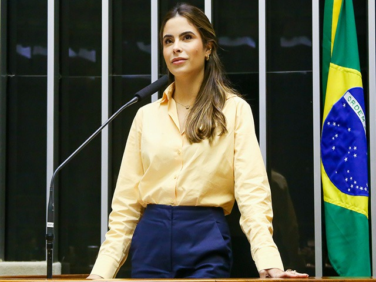

DATAFOLHA
POLÍTICA
Lula indica a possibilidade de ser o candidato do PT nas eleições de 2018

PODER ONLINE
PT vê em Lula chave para evitar dissidências na direção
MAIS DATAFOLHA
Alckmin mantém favoritismo em SP, mas vantagem sobre Skaf cai
CAMPANHA
Campanha contra cavaletes de candidatos ganha as redes sociais
BLOG DO KENNEDY
Recuos freiam subida de Marina; PT vê situação desesperadora em SP